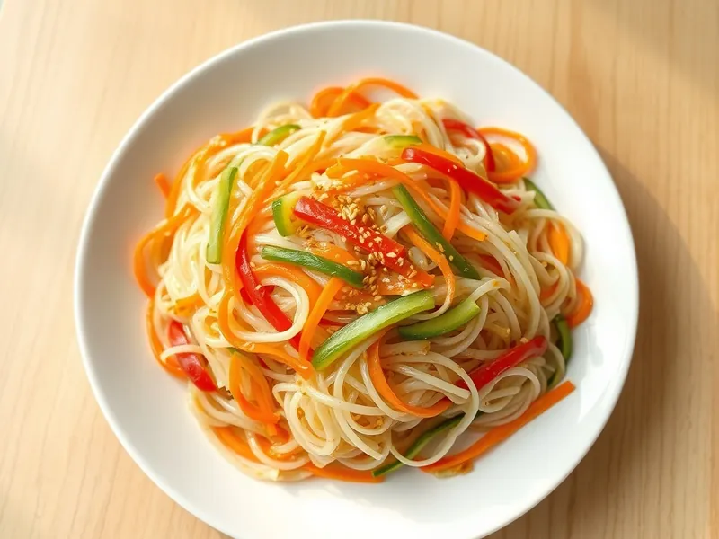

Фунчоза с овощами по-корейски
Холодный салат из прозрачной лапши с морковью, огурцом и перцем в соевой заправке
30 мин4 порц.284 ккал на порциюБ 5 · Ж 10 · У 41Азиатская кухня
Открыть в приложении: порции, таймеры, список покупок
Продукты на 4 порц.
- Рисовая лапша150 г
- Морковь2 шт
- Огурцы2 шт
- Перец болгарский1 шт
- Чеснок2 зуб.
- Соевый соус3 ст. л.
- Рисовый уксус2 ст. л.
- Сахар2 ч. л.
- Кунжутное масло1 ст. л.
- Растительное масло1,5 ст. л.
- Кунжут1 ст. л.
- Острый перец молотый по желаниюпо вкусу
- Вода1500 мл
Как готовить
- Залейте лапшу кипятком и оставьте на 5-7 минут, пока она не станет мягкой и прозрачной. Промойте холодной водой и откиньте. Длинную лапшу порежьте ножницами.
- Морковь натрите на тёрке для корейской моркови или нарежьте тонкой соломкой. Огурцы и перец нарежьте соломкой.
- Чеснок мелко порубите. Разогрейте растительное масло на среднем огне, обжарьте чеснок 30 секунд до аромата и снимите с огня.
- Смешайте соевый соус, уксус, сахар, кунжутное масло и масло с чесноком, по желанию добавьте острый перец.
- Соедините лапшу с овощами, залейте заправкой и перемешайте.
- Уберите в холодильник на 15 минут, перед подачей посыпьте кунжутом.
Совет. Лапшу не варите, а только заливайте кипятком, иначе она слипнется в комок. В холодильнике салат хранится 2 дня.